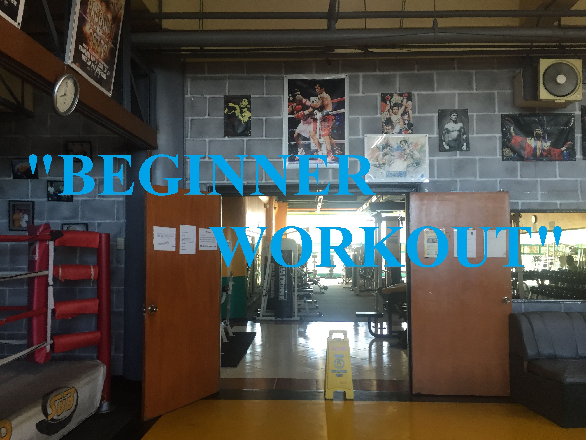
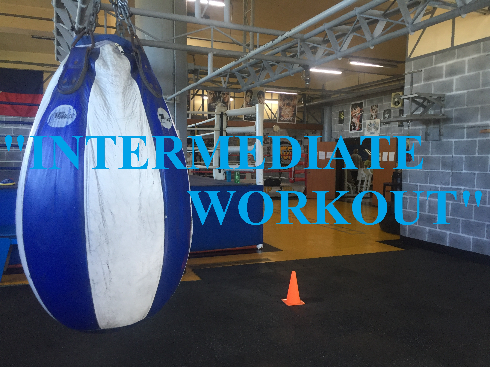

OUR PROGRAM
  
10 MUST-READ BEGINNER WORKOUT TIPS
- MAKE FITNESS A HABIT
Going to the gym once is definitely a great start, but you won't see positive changes in your mind and body unless you make hitting the gym a habit. I know it might sound like an impossible task, especially if you feel you have a full day already, but working out 3-4 times each week for at least three weeks is absolutely essential to your budding success.
When skipping the gym is more of an annoyance than a relief, you know you're on the way to success. Give yourself time to make the habit stick. One week is not enough. Be consistent in your plan and you'll move forward very quickly toward your goals.
- CONTROL YOUR LIFTS
Beginners often learn by watching. That's not necessarily a bad thing, but if you copy somebody doing a lift improperly, it means you're not doing it right, either. Most often, bad form comes from trying to lift too much weight too soon. When that happens, most people turn to momentum rather than muscle contraction to move the weight.
More weight can wait. In the grand scheme of things, how much you can biceps curl matters very little. What's important is learning how to squeeze your muscles to move the weight rather than using your hips to thrust the weight up.
- DO COMPOUND MOVEMENTS
Beginners interested in fitness can be easily distracted by complex training techniques found in magazines and online articles. If you've never stepped foot in a gym or haven't been in one for a long time, going right to isolation moves that work just one muscle group at a time won't bring you the best results. To get the best results for muscle growth and fat loss, it's best to start with compound lifts like the squat, bench press, shoulder press, bent-over row, deadlift, pull-up, and lunge. These lifts require you to use multiple muscle groups at the same time. Doing them will allow you to lift more weight, hit more muscles, and increase your metabolic rate much better than you could doing dropsets of isolation movements like triceps extensions.
To start, select lifts that require you to use at least half your body to do them. You can add isolation work as you get going, but start with the moves that will give you the most bang for your buck.
- POSTURE PERFECT
How your spine is set during your lifts can have a huge impact on your body and the amount of weight you're able to lift. Unless you're a pro powerlifter or are being coached in a specific way, it's best to keep your lower back slightly arched, your chest up, and your head and neck in a neutral position, no matter which lift you're doing.
A healthy spine usually stems from a strong core. If your core is weak, then your spine doesn't have any support. When you're lifting—even during movements as simple as a biceps curl—engage your core. You might feel like you're just flexing your abs, but you're also engaging those deep, inner core muscles that protect your spine.
- DIET LIKE YOU MEAN IT
Just because you hit the gym doesn't mean you get to spend the day eating pizza and doughnuts. What you do in your workout is just a small piece of the fitness puzzle. What you do with the other 23 hours you're not in the gym is much more important
The word "diet" can be a little scary, but I'm not telling you to have celery and water for every meal. Nutrition doesn't have to be difficult. To start, get rid of all the processed crap in your diet and eat protein and vegetables at every meal.
You can still enjoy good food, but make smarter choices. Instead of having pizza one night, try making chicken with quinoa and green beans. You can still make food that tastes good—it just takes a little more thought and preparation.
- SQUEEZE
Going to the gym and getting through a workout is a huge part of building your best self. However, it's just as important to make sure you get the most out of your workouts. An often-missed principle of lifting is a strong contraction—or squeeze—at the top of every movement.
Whether you're doing biceps curls, triceps press-downs, glute bridges, or leg extensions, squeezing as hard as you can at the top of the lift will help you build muscle. You don't need to squeeze for more than a second or two, but challenging those muscle groups to work that much harder will pay big dividends.
- LEARN FROM YOUR MISTAKES
Nobody started out as an expert. You're just beginning, so remember that you are going to make mistakes. That's the way it is with all things. The trick is to pay attention to these mistakes and learn from them.
Think about your body and how it responds to your lifts, your diet, and even your attitude. No two people are entirely alike. The better you understand yourself, the more you can tailor your workout program to your own needs. This means better results in your future.
That way, you can look back and figure out what made you feel great, what made you feel sore, and what made you feel like you wanted to quit. Use this information to get better!
- FINISH EVERY REP
Many beginners focus too much on the first part of the lift (the concentric or lifting portion) and forget all about the lowering (eccentric) part. I know it's fun to watch your muscles flex, but letting the weight drop quickly and without control can be disastrous. You want your muscles to be strong all the way through their entire range of motion, not just the first half of the lift.
- ASK QUESTIONS
As a beginner, you'll likely have questions. There's nothing wrong with that! The worst thing you can do is keep yourself ignorant. Failing to ask questions can lead you to develop bad habits, lift improperly, and find yourself working hard without seeing results. If you're too shy to speak up, consider booking a session with a trainer. It's their job to answer your questions.
- THINK ABOUT YOUR MUSCLES
I know this might sound silly, but it's important to actually focus your mind on the muscle you're training.
Being able to focus your mind on what your muscles are doing is often called the "mind-muscle connection." Consciously telling your muscles to move in a certain way will help you visualize and develop the target muscle group.
Going to the gym once is definitely a great start, but you won't see positive changes in your mind and body unless you make hitting the gym a habit. I know it might sound like an impossible task, especially if you feel you have a full day already, but working out 3-4 times each week for at least three weeks is absolutely essential to your budding success.
When skipping the gym is more of an annoyance than a relief, you know you're on the way to success. Give yourself time to make the habit stick. One week is not enough. Be consistent in your plan and you'll move forward very quickly toward your goals.
Beginners often learn by watching. That's not necessarily a bad thing, but if you copy somebody doing a lift improperly, it means you're not doing it right, either. Most often, bad form comes from trying to lift too much weight too soon. When that happens, most people turn to momentum rather than muscle contraction to move the weight.
More weight can wait. In the grand scheme of things, how much you can biceps curl matters very little. What's important is learning how to squeeze your muscles to move the weight rather than using your hips to thrust the weight up.
Beginners interested in fitness can be easily distracted by complex training techniques found in magazines and online articles. If you've never stepped foot in a gym or haven't been in one for a long time, going right to isolation moves that work just one muscle group at a time won't bring you the best results. To get the best results for muscle growth and fat loss, it's best to start with compound lifts like the squat, bench press, shoulder press, bent-over row, deadlift, pull-up, and lunge. These lifts require you to use multiple muscle groups at the same time. Doing them will allow you to lift more weight, hit more muscles, and increase your metabolic rate much better than you could doing dropsets of isolation movements like triceps extensions.
To start, select lifts that require you to use at least half your body to do them. You can add isolation work as you get going, but start with the moves that will give you the most bang for your buck.
How your spine is set during your lifts can have a huge impact on your body and the amount of weight you're able to lift. Unless you're a pro powerlifter or are being coached in a specific way, it's best to keep your lower back slightly arched, your chest up, and your head and neck in a neutral position, no matter which lift you're doing.
A healthy spine usually stems from a strong core. If your core is weak, then your spine doesn't have any support. When you're lifting—even during movements as simple as a biceps curl—engage your core. You might feel like you're just flexing your abs, but you're also engaging those deep, inner core muscles that protect your spine.
Just because you hit the gym doesn't mean you get to spend the day eating pizza and doughnuts. What you do in your workout is just a small piece of the fitness puzzle. What you do with the other 23 hours you're not in the gym is much more important
The word "diet" can be a little scary, but I'm not telling you to have celery and water for every meal. Nutrition doesn't have to be difficult. To start, get rid of all the processed crap in your diet and eat protein and vegetables at every meal.
You can still enjoy good food, but make smarter choices. Instead of having pizza one night, try making chicken with quinoa and green beans. You can still make food that tastes good—it just takes a little more thought and preparation.
Going to the gym and getting through a workout is a huge part of building your best self. However, it's just as important to make sure you get the most out of your workouts. An often-missed principle of lifting is a strong contraction—or squeeze—at the top of every movement.
Whether you're doing biceps curls, triceps press-downs, glute bridges, or leg extensions, squeezing as hard as you can at the top of the lift will help you build muscle. You don't need to squeeze for more than a second or two, but challenging those muscle groups to work that much harder will pay big dividends.
Nobody started out as an expert. You're just beginning, so remember that you are going to make mistakes. That's the way it is with all things. The trick is to pay attention to these mistakes and learn from them.
Think about your body and how it responds to your lifts, your diet, and even your attitude. No two people are entirely alike. The better you understand yourself, the more you can tailor your workout program to your own needs. This means better results in your future.
That way, you can look back and figure out what made you feel great, what made you feel sore, and what made you feel like you wanted to quit. Use this information to get better!
Many beginners focus too much on the first part of the lift (the concentric or lifting portion) and forget all about the lowering (eccentric) part. I know it's fun to watch your muscles flex, but letting the weight drop quickly and without control can be disastrous. You want your muscles to be strong all the way through their entire range of motion, not just the first half of the lift.
As a beginner, you'll likely have questions. There's nothing wrong with that! The worst thing you can do is keep yourself ignorant. Failing to ask questions can lead you to develop bad habits, lift improperly, and find yourself working hard without seeing results. If you're too shy to speak up, consider booking a session with a trainer. It's their job to answer your questions.
I know this might sound silly, but it's important to actually focus your mind on the muscle you're training.
Being able to focus your mind on what your muscles are doing is often called the "mind-muscle connection." Consciously telling your muscles to move in a certain way will help you visualize and develop the target muscle group.
BONUS TIPS
- SETS
A "set" is how many times you perform the reps.
- REPS
A repetition known as REPS is how many times you perform the movement.
A "set" is how many times you perform the reps.
A repetition known as REPS is how many times you perform the movement.